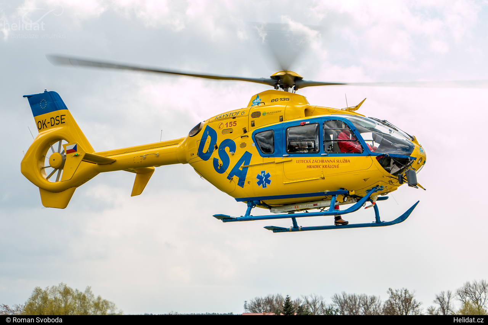
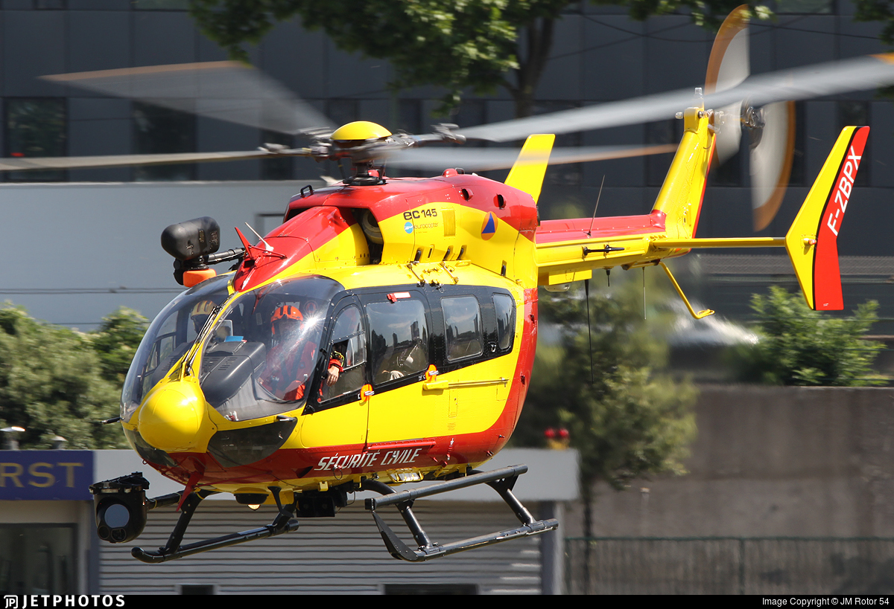
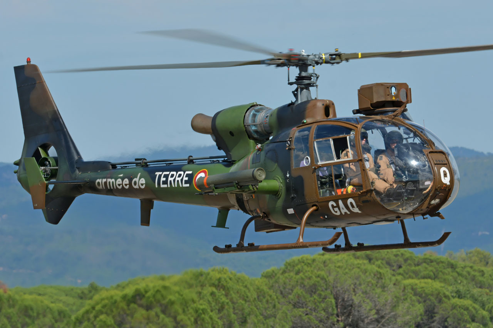
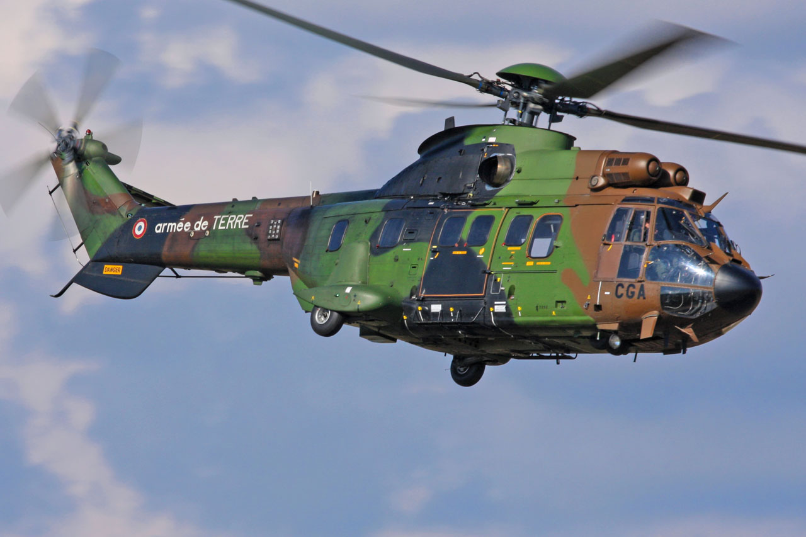
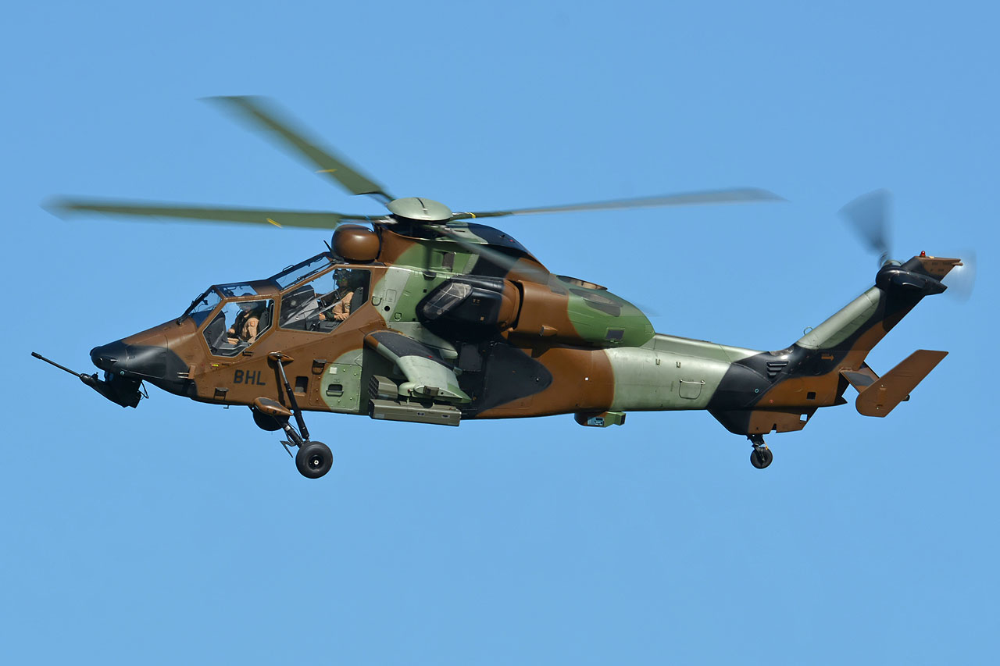
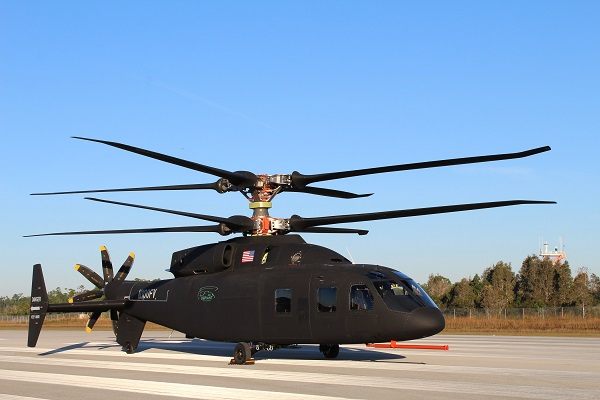
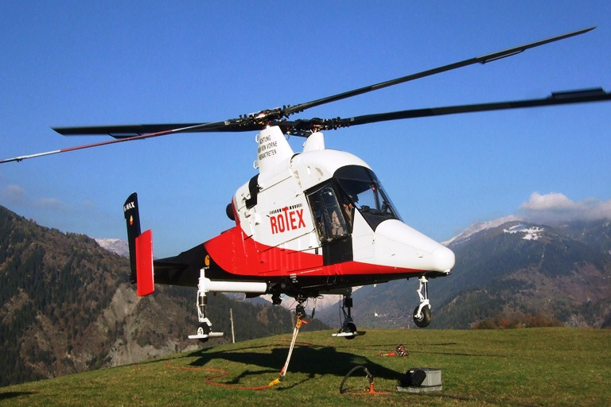
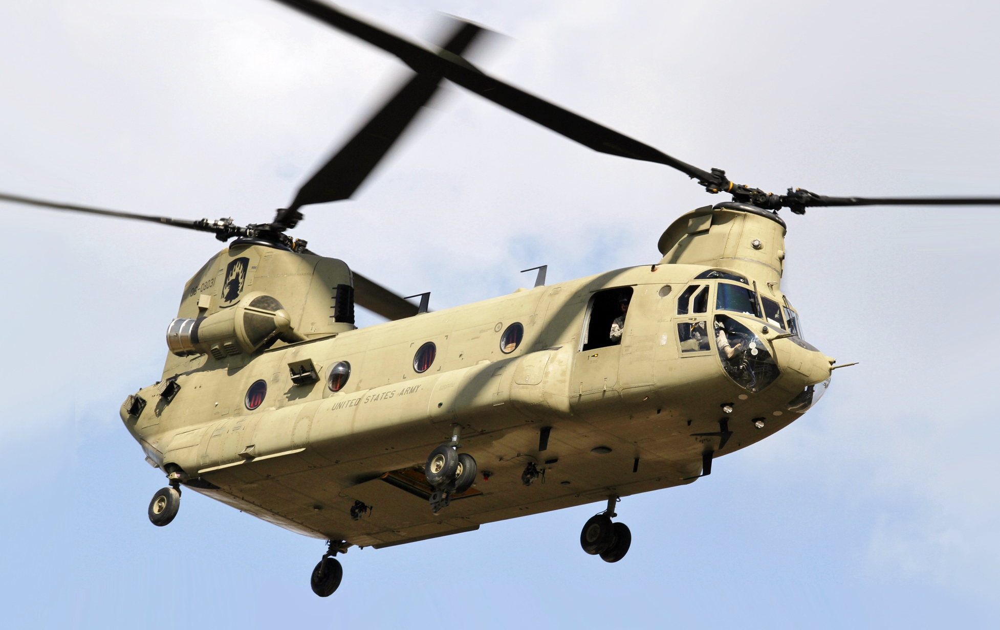

Les petits et moyens hélicoptères sont principalement des hélicoptères de tourisme, de santé ou militaires à l'exemple de la Gazelle.
Leur rotor principal a entre 2 et 4 pâles et il ont souvent à la place du rotor anti couple un fenestron qui contient de 8 à 18 pales.
L'avantage du fenetron est une meilleure rapidité de rotation du fait du plus grand nombre de pâles sur le fenestron,
et un bruit moindre grâce à l'inclinaison différente de chaque pâle qui réparti le bruit sur différentes fréquences.
Le fenestron n'est cependant intéressant que dans le cas d'un grand hélicoptère à cause de sa consommation plus élevée.

Eurocopter EC135
Grands Hélicoptères
Les Grands hélicoptères peuvent être utils pour faire du tourisme, du transport de matériel, de personnel, des missions de santé, militaires ou encore du transport de VIP.
Leur rotor principal a 4 ou 5 pâles et contrairement aux hélicoptères de petits et moyens tonnages, ils n'ont pas ou rarement de fenestron à cause de la consommation élevée d'essence.
Leur plus grand nombre de pâles ainsi que le fait d'avoir des rotor ati couple conventionnel génèrent plus de nuisance sonore qu'un petit ou moyen hélicoptère.
Cepenant, de nos jours des solutions sont trouvés pour amoindrir ce bruit comme le rotor de pâles Blue Edge, ou les pâles ont une forme de boumerang à leur extrémité.

Eurocopter EC145 Dragon de la sécurité civile
Hélicoptères militaires
Hélicoptère de Reconaissance et d'Attaque

Sudaviation SA342 Gazelle
Hélicopère de Manoeuvre et d'Assault
Il éxiste 4 hélicoptères de manoeuvres et dassault en France :
Sud-Aviation SA330 Puma
Aerospatiale AS532 Cougar / Airbus H215M Cougar
Airbus H225M Caracal
NH90 Caïman
Ces hélicoptères ont pour mission principale l'héliportage de combattants et de matériel tactique en zone d'opération.
Chronologiquement, le premier appareil de manoeuvre a été le SA330 Puma. Ont ensuite suivi le Cougar dont il éxiste deux versions, le Cougar MK1 et MK2.
Ces deux versions se distinguent par leur longueur. On peut aperçevoir la place supplémentaire pour une fenêtre juste après le cockpit dans la version MK2 comparé à la version MK1.
Cet appreil est principalement utilisé en France dans l'ALAT, l'Aviation Légère de l'Armée de Terre.
La version civile du Cougar a la dénomination de SuperPuma.
La nouvelle appélation du Cougar en H215M fait suite à la nouvelle dénomination de Aerospatiale à Airbus.
L'appareil suivant est le H225M Caracal. Cet hélicoptère est principalement employé par l'Armée de l'Air et la Marine et est l'évolution la plus récente de la famille des Puma, SuperPuma, Cougar et Caracal.
La principale différence entre le Puma, Cougar et Caracal étant que le Caracal possède 5 pâles au rotor principal et 4 au rotor anti couple contre respectivment 4 et 5 pour le Puma et Cougar.
Pour les versions Airbus du H215M Cougar et H225M Caracal, les versions civiles ont la même appélation en retirant toute fois le M pour "militaire" de l'indicatif de l'appareil.
Le dernier Appareil est le NH90 Caïman. Cet appareil est très récent est n'est qu'en cours de déploiement dans l'ALAT depuis 2018.

Aerospatial AS532 Cougar MK2
Hélicoptère d'Appui et Destruction
Le but des hélicoptères d'appui et destruction est d'appuyer les troupes au sol ou de détruire des objectifs au cours des OPEX.
En France, l'ALAT (Aviation Légère de l'Armée deTerre) n'a qu'un seul hélicoptère d'appui et destruction, l'Eurocopter EC665 Tigre maintenant appelé Airbus EC665 "Tiger".
Cet hélicoptère Franco-Allemand a été développé autour de son armement, avec un cahier des charges basés sur les missions qu'il devrait réaliser.
Il éxiste 4 versions du Tigre :
HAD : Hélicoptère d'appui et destruction
HAP : Hélicoptère d'appui et protection
UHT : Version allemande Anti Chars
ARH : Version de reconnaissance utilisée par les Australien et Espagnol
La Francene ne possède que des versions HAD et HAP.
La version HAD peut emporter jusqu'à 4 types d'armement différents contre seulement 2 pour la version HAP, ce en plus du canon 30mm à l'avant du Tigre.
L'EC665 Tigre est l'hélicotère le plus moderne de l'arméee, avec un casque moulé pour chaque pilote et une visière en réalité augmentée avec laquelle il peut viser et tirer avec le 30 mm.

Eurocopter EC665 Tigre
Hélicoptères bi-rotors
Tous les hélicoptères bi-rotor, à la différence des hélicoptères stantard, n'ont pas besoin de rotor anti couple.
Leur rotation s'effectue par la différence de vitesse de rotation de l'un des deux rotors principaux.
Hélicoptères à bi-rotors contrarotatifs sur même axe
Sur ce type d'hélicopttères, les deux rotors sont sur le même axe, l'un au dessus de l'autre
Les deux rotors tournent dans le sens contraire l'un par rapport à l'autre, cependant à la même vitesse.
Les hélicoptères bi-rotors contrarotatifs n'ont pas besoin de rotor anti-couple. La rotation de droite à gauche se fait grâce aux deux rotors principaux.
Quand le palonnier est actionné, l'un des deux rotors tourne plus vite que l'autre et amène donc plus de couple pour effectuer la rotation.

Sikorsky Boeing SB1 Défiant
Hélicoptères à bi-rotors contrarotatifs sur axes convergents
Les hélicoptères à bi-rotors contrarotatifs sur axes convergents ont deux rotors principaux et pas de rotor anti-couple.
Ces deux rotors tournent dans uun sens opposé en se croisant.
Avec des rotors à deux pales, les deux rotors sont donc en retard d'un quart de tour l'un sur l'autre.

Kaman Kmax
Hélicoptères à bi-rotors contrarotatifs en tandem
Bonsoir.

Boeing CH47 Chinook
Hélicoptères à bi-rotors contrarotatifs sur le côté